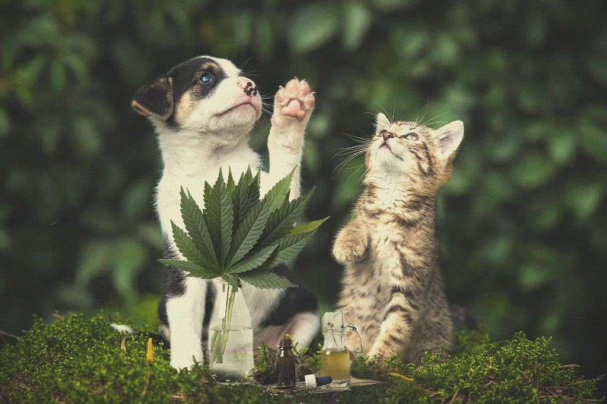
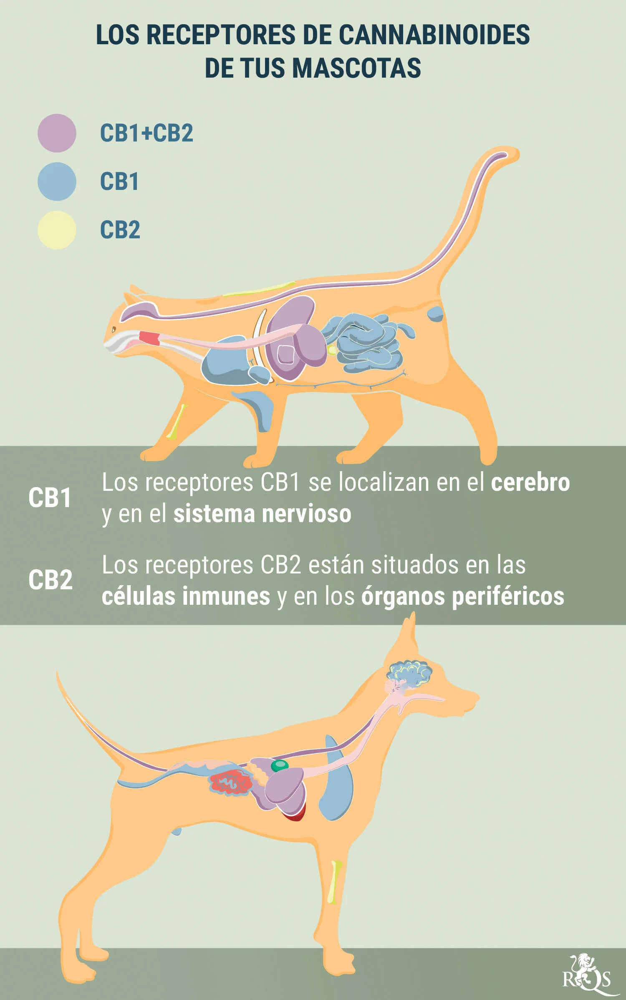
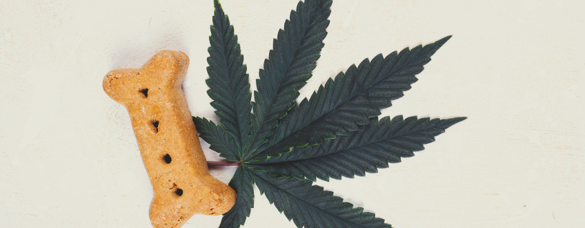

|
Conocemos los efectos beneficiosos del THC y el CBD. Ambas moléculas relajan la mente y calman el cuerpo a través del sistema endocannabinoide. Pero, ¿pueden nuestras mascotas beneficiarse de estas moléculas? Consulta la información sobre marihuana, perros, gatos y otras mascotas, los posibles efectos, la legalidad y los productos del mercado. Las personas tenemos una larga tradición con las plantas de marihuana. A lo largo de los años, hemos utilizado la especie como fuente de alimento, fibra, medicina y con fines recreativos. En la era moderna, hay más personas consumidoras de marihuana que nunca. En algunas partes del mundo las leyes están siendo más indulgentes, y eso significa que ahora hay más hogares con un frasco de marihuana junto a las especias culinarias, y que también muchas personas cultivan sus propias plantas en casa o en el jardín. Naturalmente, la gran popularidad de la marihuana nos lleva a una pregunta común: ¿qué pasa con la marihuana y los perros o gatos? Todos sabemos que la hierba cuenta con un perfil de seguridad impresionante, especialmente en comparación con otras sustancias. Pero, ¿significa eso que podemos compartirla tranquilamente con nuestros amigos peludos? Tanto si quieres aliviar la ansiedad de tu perro durante los fuegos artificiales o los síntomas de algún trastorno de salud de tu gato, esto es lo que necesitas saber sobre la marihuana para perros y gatos. ContenidoMarihuana para perros, gatos y otras mascotas El sistema endocannabinoide en los animales Toxicidad de la marihuana en perros, gatos y otras mascotas ¿Es legal administrar marihuana medicinal a tu perro o gato? ¿Cuál es el futuro de la marihuana medicinal para perros, gatos y otras mascotas? ¿Deberías darle marihuana a tu perro o gato? |
 |
Todos hemos escuchado historias de mascotas que se colocan, como perros que encuentran los comestibles de su dueño o gatos que se relajan sospechosamente durante fumadas intensas. Aunque las mascotas y la marihuana recreativa no son compatibles, ¿pueden nuestros animales domésticos beneficiarse de los aspectos terapéuticos de la planta?
Al igual que nosotros, nuestros perros y gatos enferman. Algunos desarrollan enfermedades agudas graves, mientras que otros experimentan los signos típicos del envejecimiento, desde molestias y dolores hasta artritis. Antes de plantearnos si dar marihuana a nuestras mascotas para aliviar sus dolencias, hay que saber exactamente cómo actúa en los animales.
|  |
La marihuana actúa de forma muy similar en las mascotas y en sus dueños. Los cannabinoides interactúan con los receptores de muchos seres vivos de una manera sumamente específica, a través del sistema endocannabinoide (SEC). El SEC juega un papel regulador en mamíferos y otros animales. Funciona para equilibrar nuestros sistemas internos y mantener un estado de homeostasis. SEC consta de dos sitios receptores principales, CB1 y CB2,además de enzimas y de nuestros endocannabinoides internos. Los cannabinoides externos, como el THC, imitan a nuestros propios cannabinoides a nivel molecular, permitiendo que see unan a estos sitios y creando cambios en el cuerpo. Casi todos los animales tienen un SEC, desde caballos y loros hasta serpientesy nematodos. Tu perro o gato tiene un SEC, al igual que tu pez dorado. Cuando administramos marihuana a nuestras queridas mascotas, provocamos un cambio temporal en su biología. Aunque esto podría resultar beneficioso a la hora de combatir determinadas dolencias, en algunos casos puede suponer una grave amenaza para su salud. |
Nosotros, como humanos, tenemos suerte. Tenemos el lujo de poder disfrutar de la marihuana de una forma prácticamente segura. Si alguna vez nos excedemos, simplemente nos sentimos cansados, hambrientos y nos vamos a dormir. Por desgracia, no es el caso de nuestros perros y gatos.
Aunque la investigación sigue siendo escasa acerca de los efectos del THC en perros y gatos,las pruebas sugieren que experimentan efectos tóxicos más rápido y con dosis más bajas que las personas. Del mismo modo, los perros poseen una mayor cantidad de terminaciones nerviosas en la nariz, y también tienen una concentración mucho mayor de receptores CB1 en sus cerebros.
La mayoría de las veces, el consumo de marihuana en perros o gatos no es fatal. Un porro normal contiene alrededor de 150mg de THC, posiblemente lo suficiente para inducir efectos psicoactivos si se inhala de forma pasiva. Sin embargo, asegúrate de mantener fuera del alcance de tus mascotas tu marihuana medicinal rica en THC, porque si la prueban, las consecuencias podrían ser mucho más graves.
Las plantas de marihuana contienen una gran cantidad de fitoquímicos diferentes y el THC representa uno de los más de 100 cannabinoides. Muchas de estas moléculas necesitan ser investigadas, ya que no se conocen sus efectos en perros y gatos. Sin embargo, el CBD podría presentar una opción viable para las dolencias de tu mascota bajo circunstancias adecuadas.
Como el CBD es un cannabinoide no psicoactivo, muchas personas lo consumen a diario para reducir el nerviosismo, calmar los músculos y lograr un estado mental lúcido y relajado. Aunque, de nuevo, la investigación sigue siendo preliminar y escasa.
Marihuana y perros: los efectos del CBD en los perrosExisten pruebas anecdóticas y algunas investigaciones sobre perros y marihuana. Los resultados de un estudio preliminar muestran resultados prometedores. Un artículo publicado en la revista Frontiers in Veterinary Science analizó los efectos del CBD en perros con osteoartritis[2], una degeneración de las articulaciones relacionada con la edad.Los resultados mostraron una disminución significativa del dolor durante el tratamiento. Curiosamente, los investigadores no observaron efectos secundarios. Otro estudio realizado en la Universidad Estatal de Colorado analizó el efecto del CBD[3] en perros epilépticos. Los descubrimientos iniciales mostraron que un 89% de los perros que recibieron tratamiento con cannabidiol en el ensayo clínico experimentaron una reducción de las convulsiones. |
Marihuana y gatos: los efectos del CBD en los gatosLos ensayos clínicos sobre los efectos del CBD en gatos son prácticamente inexistentes. Actualmente, solo podemos confiar en testimonios anecdóticos y pruebas preliminares en lo que respecta a dar CBD a nuestros compañeros felinos. Hasta ahora, estos informes sugieren que el CBD podría ayudar a: Reducir la agresividadAumentar el apetito Disminuir la ansiedad y el estrés |
|  | |
|---|---|
A medida que el CBD continúa ganando popularidad, están surgiendo muchas líneas de productos para mascotas. Aunque algunas personas simplemente dan aceite de CBD a sus animales, también existen diferentes tipos de snacks, por lo que los dueños seguramente pueden encontrar un producto que se adapte a su perro o gato. Hay galletas, pienso, premios, e incluso pastillas y cápsulas, que proporcionan dosis precisas de cannabidiol. Los premios de CBD vienen en una gama de sabores variados, desde tocino y queso hasta los más originales, como batata, calabaza o mantequilla de maní. Si quieres comprar algo rico para tu mascota, busca en tiendas de animales por internet o ve a la tienda de mascotas de tu barrio. En términos de dosificación, se suele recomendar comenzar con 1mg de CBD por cada 4,5kg de peso corporal en perros y gatos, siendo 3mg por cada 4,5kg el máximo. Los productos actuales contienen niveles seguros de cannabidiol para gatos y perros y están disponibles en una serie de concentraciones para cada tratamiento, según el peso de tu mascota. El cannabinoide actúa para calmar a perros y gatos y puede hacer que estén más tranquilos y relajados, o ayudar con los síntomas de sus molestias.
Varias empresas también han desarrollado productos tópicos para mascotas.Estos aceites, bálsamos y cremas están diseñados para llegar al sistema endocannabinoide desde la piel y aliviar los síntomas de las irritaciones cutáneas. También contienen otros ingredientes calmantes, como aceite de eucalipto, manteca de karité, cera de abejas o aceite de semilla de uva, por nombrar algunos, que trabajan junto con el CBD y ejercen sus efectos calmantes en la piel de tu mascota. Los perros y gatos pueden experimentar una serie de afecciones dermatológicas, desde erupciones causadas por alergias a los alimentos hasta reacciones a las pulgas y formas de eccema. Los productos tópicos de CBD ayudan a reducir la sequedad, el picazón y a aliviar las grietas en nariz y patas, cuidando la piel de tu amigo peludo y, en consecuencia, mejorando su bienestar general.
El hecho de que la marihuana medicinal sea legal en algunos lugares no significa que puedas dársela legalmente a tu amigo peludo. El CBD, por otro lado, sigue avanzando como una opción viable para perros y gatos. En los últimos años, muchos países del mundo han legalizado este cannabinoide no psicoactivo. En estas zonas, los dueños de mascotas pueden proporcionar productos de CBD a sus perros y gatos de forma legal.
Se necesita más investigación acerca del uso de marihuana medicinal para perros y gatos. Las personas pueden consumir marihuana medicinal de forma legal en muchos lugares del mundo, y la marihuana recreativa también es legal en algunas zonas, como por ejemplo Canadá y ciertas partes de los EE.UU. Esto despierta interés y, naturalmente, tanto los dueños de mascotas como los veterinarios comienzan a plantearse si la marihuana también puede ayudar a tratar a perros y gatos. Esto seguramente dará como resultado una mayor investigación sobre la marihuana y los perros y el desarrollo e introducción de nuevos productos.
Sí y no. No recomendamos dar THC a tu mascota debido a la posibilidad de una reacción tóxica. Sin embargo, el CBD podría servir como una opción viable para ayudar a tu perro o gato a lidiar con una dolencia en particular. Después de hablar con tu veterinario sobre la posibilidad, analiza la gama cada vez mayor de productos de CBD para mascotas, para ver qué producto puede ser el más beneficioso.